One jam weekend. One person. A team of AI agents. This is the whole record.
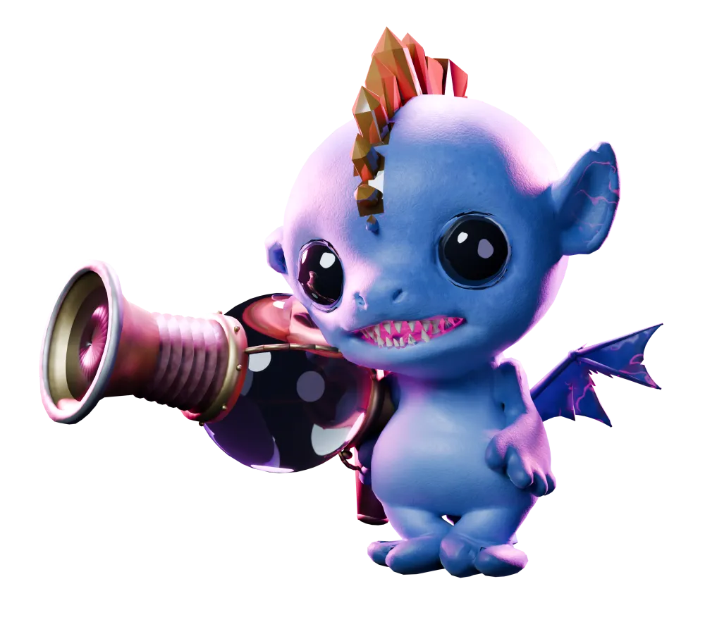
NOXIE: PRIME CUT is a third-person action-comedy for the 2026 Epic AI MegaJam (theme: Director's Cut), made in Unreal Engine 5.8 on one laptop. This dev log is written from the project's own running log, test results, independent reviews and the creative lead's own words. It does not say the game is fun. It says what was built, how each thing was checked, and the three times the checks said "pass" and a person looking or playing said otherwise.
Developed by Vyztra
What this is, and why it is worth ten minutes
The Glass Box prize is for the best dev log of how a submission was made. Most dev logs are a list of things that went well. This one keeps the failed builds, the wrong guesses, the stalled agents and the measurements that arrived too late.
One human, the creative lead, directed the whole project. Every line of code and every 3D model was produced by AI agents working for him; the score and most effects are synthesised by Python code that AI agents wrote, and 31 of the 59 newest effects layer licensed human-made recordings (section 17). He chose, rejected, approved and played the builds sent to him. That split is the subject of this page.
What the creative lead did that no agent did, from the records. He wrote the brief and the canon. He named the character and set its design direction, choosing design G from eight concepts. He played the builds sent to him (the Friday build, Candidate 5b on Saturday, Candidate 6 on Sunday) and rejected or stopped on the first two. He rejected the first trailer and the first marketing images, which had passed their checks. He set the rule that the verified old build stays untouched as the fallback. He made the calls on what not to build: no Windows build, no new levels, Ninja Chicken deferred.
If you only have three minutes, read how it was tested, the failures and the trailer that was choppy. If you are technical, add the architecture. If you are not, the before and after pictures and the creative lead's playtest notes tell the story without any code.
How to read the labels
Verified measured or pictured on a build, with the record named.
Owner-observed the creative lead saw it while playing.
Untested nobody has checked it.
Every picture is labelled: Gameplay frame a frame the game itself drew, Render a 3D render outside the game, Concept an AI-generated picture used as a design target, Tool output a contact sheet or chart made by a test tool.
Written and updated on Sunday 15 November 2026. Candidate 7b shipped. At the last update, nobody had played Candidate 7b by hand; the creative lead had watched trailer 5b and rejected it (section 15), and a character-first teaser cut to his own sequence is the video on the game page. The entry is submitted: he made the submission by hand on Sunday 15 November at about 5:38 PM EST, and the jam's public entry page reads "3 hours, 21 minutes before the deadline". The game page is public, macOS, with a 445 MB download shown.
Sunday 15 November, about 15:35. The final build is Candidate 7b: Candidate 7 plus one commit, in which the dark curtain behind each door became a one-sided plane so the view no longer goes black when the camera is behind it. An independent reviewer of a different model found no blocker in Candidate 7 (17 packaged runs and a Candidate 6 control) and, at 15:32, kept Candidate 7b. Candidates 6 and 7 stayed byte-identical all day (section 16).
The idea, and how it became NOXIE
Evidence: strong. The brief is saved word for word.At noon on Friday 13 November the creative lead wrote a brief and handed it to a project-manager agent. An earlier jam concept had been started on Thursday and was paused by him that morning; only its build, test and capture tooling was reused.
The brief asked for a 15 to 25 minute third-person action-comedy. The player is "an original cute-but-biologically-questionable creature trying to accomplish an absurdly mundane domestic task while being dragged through escalating catastrophe." The theme was not to be decoration. His words: "DIRECTOR'S CUT must be mechanically experienced by the player." Death was to be "another take": a malfunctioning Director that sees the world as a production, and treats a death as a failed take.
The brief also floated a weapon idea called Ninja Chicken Bomb. That idea is part of the story in section 19: it was never built.
The first version, working title BAD TAKE, was a small domestic errand. A creature called Bodge is sent to fetch one glowgrub (the creature that works as a light bulb in his porch lamp) from a fun-hall run by a watching eye. His weapon, the Gulper, swallows props and small enemies and fires them back out.
On Saturday 14 November the creative lead played the build and then sent a locked canon of his own. It renamed the protagonist Noxie (Bodge became the codename), named the watcher Dio Prime, and gave the project its title and its signature: the Prime Cut, the version of the world the player restores. He also wrote the line that changed the design: the game "cannot rely on death causing alternate takes as its sole originality claim." That sentence is why the Cut became something the player does, not only something that happens to him (section 5).
File and app names inside the project still say BadTake. Player-facing text says NOXIE: PRIME CUT.
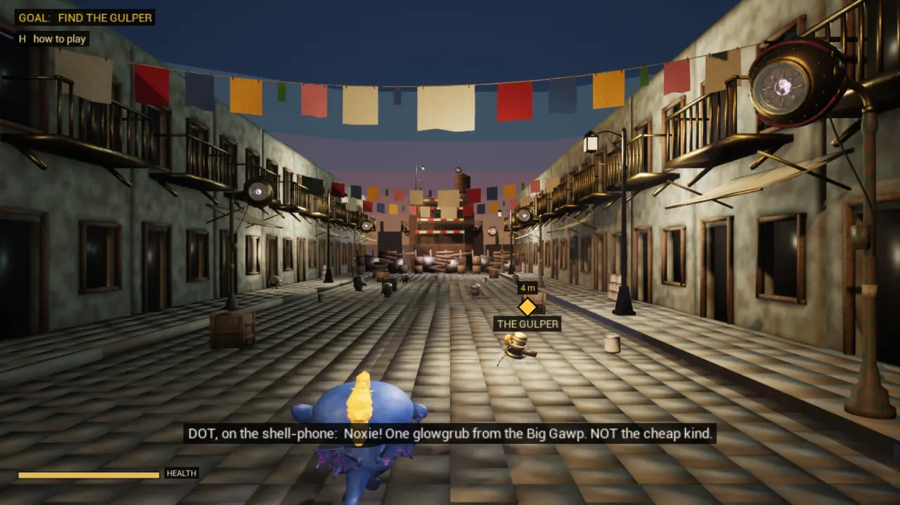
The creative lead's decisions, in his own words
Evidence: strong. Each quote is saved verbatim with its time.The agents proposed. He decided. These are the moments that changed the project, quoted short and unedited.
"Implemented" does not mean "works." ... If evidence contradicts an agent's claim, evidence wins.
The brief, Fri 13 Nov 12:06"Current human playtest verdict: FAIL on feel/quality."
First playtest, Fri 13 Nov 13:40"i put photos in downloads of some various ref photos for a base, but want to make the creature my own from the references."
On the first character concepts, Fri 13 Nov 13:55"g: but blueish i think, make creepy teeth and big eyes and spikes formed like a mohawk down the center line of head."
Choosing the character, Fri 13 Nov 14:01"I approve the sound reel in chat"
After hearing 17 cues on his phone, Fri 13 Nov 16:50"A WINDOWS BUILD IS NOT REQUIRED FOR THIS SUBMISSION."
Closing a rules question, Sat 14 Nov 10:07"i can't keep testing the game when i can't get passed the breaker room."
Playing Candidate 5b, Sat 14 Nov"YES, conditionally approve the redesigned Noxie for integration ... Do not hold up B1, independent QA, or the submission schedule for cosmetic refinements."
Sat 14 Nov 19:56"I like the foundation."
After playing Candidate 6, Sun 15 Nov 10:45"Do not downgrade these observations because automated tests passed."
Sun 15 Nov 10:45"Do not merely add more cubes, crates, primitive shapes, or decorative clutter."
Sun 15 Nov 10:45"... the marketing is lackluster, and the trailer is choppy. The visual impression is closer to a PS1-era game than the quality we are trying to achieve."
Sun 15 Nov 10:52What the creative lead did that no agent did, from the records. He wrote the brief and the canon. He named the character and set its design direction, choosing design G from eight concepts. He played the builds sent to him (the Friday build, Candidate 5b on Saturday, Candidate 6 on Sunday) and rejected or stopped on the first two. He rejected the first trailer and the first marketing images, which had passed their checks. He set the rule that the verified old build stays untouched as the fallback. He made the calls on what not to build: no Windows build, no new levels, Ninja Chicken deferred.
The kinds of call only he made
Which character design to build (he picked one from eight and rewrote its colour and teeth). Whether a new look was good enough to approve, approve with conditions, or refuse. When to freeze scope and when to lift the freeze. Whether a rules question was settled. What the game, the hero and the watcher are called. And, three times, he found problems in a build that had passed every scripted test: he failed the first, stopped testing the second, and sent the third back for a quality pass (section 14). No agent was allowed to write that something was fun, good or approved; the project's status words were Verified, Owner-observed, Untested and Deferred.
The jam weekend, in order
Evidence: strong. Times come from the running log and the commit history.The jam window ran from 12:00 AM on Thursday 12 November to 8:59 PM on Sunday 15 November (Eastern time). This project's repository was created at 12:12 PM on Friday 13 November, so this game had about two and a half days of commits at the deadline. Filter the timeline by day or by kind of event.
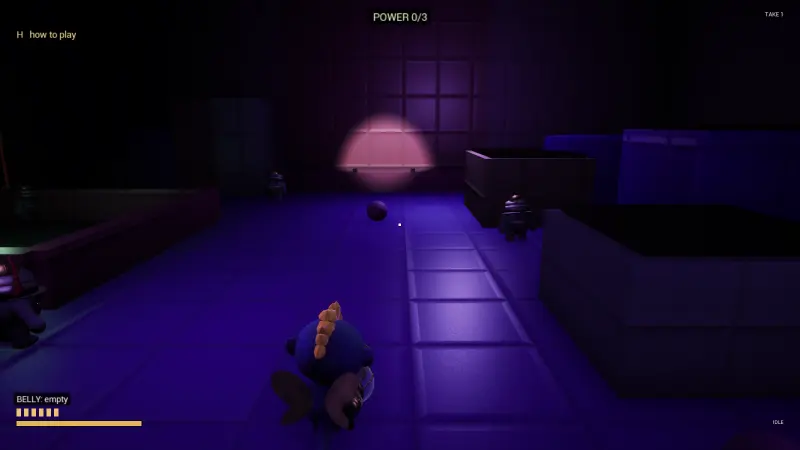
- ThuThursday 12 November
The jam window opens, on a different concept
The jam window opened at midnight, and the creative lead worked on a different game idea that day. He paused it on Friday morning, before this game began; only its build, test and capture tooling carried over.
- FriFriday 13 November
The brief
The creative lead writes the brief for a new Unreal game and hands it to a project-manager agent. Operating rule: nothing is "done" until it is implemented, played, evidenced, independently checked and judged.
Project created
The repository is created. The first writes are refused because the session had not isolated its edits in a working copy; the guard is kept on, not switched off. Guessed clock times in the first log are caught against the system clock by a documentation agent and corrected.
First packaged build
67 minutes after creation there is a packaged Mac build (862 MB) with movement, the Gulper and one enemy. Scripted tests inside the package pass: boot 3 of 3, movement 48 of 48, combat and takes 56 of 56, art 24 of 24.
A ruling on a refused command
The creative lead rules that one narrow commit command is acceptable in this working copy only, after a check. An agent had already worked around the refusal twice; the lead agent reported it instead of repeating it.
First human playtest: fail
Movement sluggish, mouse far too fast, the character ugly, the captured enemy unreadable, sound cheap. Every scripted test had passed. The movement and first-fight stages are marked failed until he plays a better build.
The character is redesigned
Round one of four concepts: he picks none and supplies four reference photos. Round two: he picks design G, "but blueish". The picture is edited and he writes: "i love the new bodge picture you opened up".
Independent feel audit
A separate reviewer measures the frozen build: mouse at 1.375 degrees per count against a normal 0.05 to 0.10, 13 to 28 fps for the first 40 seconds, 29 sound-loading stalls.
Recovery passes
Mouse fixed to 0.100 degrees per count, sounds loaded at start, global illumination switched off, the capture bug fixed, a new sound set built from recordings. Candidate 2b, a Shipping build, is named the one to play at 17:26.
"Build the whole chapter tonight"
A fresh lead agent starts an overnight run: five engineering passes, one engineer at a time, each ending in a packaged build so a playable fallback always exists.
- SatSaturday 14 November
Boss, ending and the whole chapter
Pass 4 adds the three-phase boss; pass 5 adds the ending. The whole chapter plays from the cold open to the end card and back, 435 of 435 checks, three runs in a row on the final code.
Overnight QA finds two stuck-dead bugs
An independent QA agent finds two P0 problems (a dead player never revived after certain scene cuts) and fixes them. Candidate 4, 743 MB, is the overnight result.
Windows decided; the look pass ordered
Windows build declared not required. Order for the day: keep Candidate 4 as the fallback, add no content, make the same chapter look, read and sound much better.
Candidate 5b built
The look pass lands: real materials, lit cabinets, music, readable guards.
He plays 5b and stops
"significant usability, combat, onboarding, and progression problems." The breaker room was not understandable or reliably completable, so he could not test anything past it.
His canon arrives
His own playtest words and locked canon for Noxie, Dio Prime, the Cut and the Gulper reach the project. The source search is closed; the breaker room is redesigned as the player-controlled Cut.
Final directive and a list of observations
Production is restructured: an independent adversarial QA workstream by a different model is mandatory and may reject passing work. His list from watching the test runs includes "No visible player-controlled Cut mechanic."
Noxie V2 approved
A conditional yes on renders, then a yes to integrate once the torn left wing was made visibly asymmetric.
Overnight workers launched
Combat, Cut, audio and art lines run in separate working copies while he sleeps.
- SunSunday 15 November
Feature freeze
Five lines merged. Final gates pass on the fully merged build (04:52).
The lead loses two and a half hours
The lead agent ended its turn to wait for a worker with no timer. The worker's session did nothing for over three hours. The 7:00 milestone and the overnight regression were lost (section 13).
Candidate 6 packaged
Shipping, 788 MB. The independent regression of the package finishes at 08:19: release-ready with limits, no blocker, 19 packaged runs.
Release zip validated; trailer fourth cut
A scripted player runs from the unpacked zip copy. A third trailer cut with a silent centre is caught and the cause found; the fourth cut is called final by the lead agent.
He plays Candidate 6 and rejects the trailer
"I like the foundation," plus nine findings. Seven minutes later: the trailer is "choppy". Measured at once: 41 percent of its frames are repeats.
Quality pass planned, nothing yet changed
A ranked seven-item plan with evidence for each. Candidate 6 and its zip are protected as the fallback.
Ten bounded lines launched
Five engineering lines (combat, doors, boss, the Cut, the look) in isolated copies, plus the trailer, the hero renders, marketing, submission and this dev log. Hard stop for game changes: 13:00.
A machine fault spoils the test results
Eight crashed test runs each left a helper process holding a full core, and one boss test had a 16.5 second frame. Results from that window were thrown out (section 13).
Merge and editor gates
Five lines merged with two small conflicts, both kept on both sides. Every editor gate passed: the full-chapter run (a scripted player, cold open to end card) 509 of 509 three times, and the boss-fight test 123 of 123 three times with the dressed crane on.
Candidate 7 packaged
Shipping, 788 MB. Candidate 6's files re-hashed: identical.
Independent verdict: keep Candidate 7
17 packaged runs and a Candidate 6 control. The reviewer also found two defects the builders' passing tests had missed (section 13).
Decision: Candidate 7 replaces Candidate 6
A scripted player runs from the unpacked zip copy; Candidate 6 stays byte-identical.
Candidate 7b packaged
Candidate 7 plus one commit: the door curtain becomes a one-sided plane. Packaged chapter 509 of 509; the reviewer's black-screen case: 0 black of 103 views (Candidate 7: 19 of 76).
New trailer cut
34.4 seconds, captured at half speed from Candidate 7's code. About 4 percent near-duplicate gameplay frames, against 41 percent in the old cut.
Independent delta verdict: keep Candidate 7b
Zero black views at all three doorways; the diff is exactly that one commit.
The new trailer is rejected
The creative lead watched trailer 5b and did not approve it, then wrote the sequence for a character-first teaser himself (section 15).
Platform: macOS only
He decided to submit the macOS build, with no Windows package, knowing the risk (section 19).
The entry is submitted
He submitted to the jam by hand. The jam's public entry page shows it submitted 3 hours, 21 minutes before the deadline; the game page is public with a 445 MB macOS download.
The character: from Bodge to Noxie V2
Evidence: strong. Pictures, changelogs and his replies are all saved.Version 0, built by script. At 12:54 on Friday an art agent delivered the first Bodge, built entirely by a Blender script with no Meshy calls: a smooth orange figure. The lead agent's own verdict at the time: usable as a stand-in, "weakest of the three" assets. His first playtest note, at 13:40, called the protagonist "ugly / visually weak" and told the agents: "Do not just polish the existing ugly mannequin if the underlying design is weak."
Concepts, then a pick. The lead agent had an image model make four concept pictures; he picked none and supplied four photos of kawaii stickers as a base (the photos are not in the game). Four more concepts followed. He chose G, asked for blue, creepy teeth, big eyes and a crystal mohawk down the middle of the head. The final picture was an edit of G.
Version 1, the Meshy model. From that picture an agent generated the 3D model, skeleton and animation clips with Meshy (44 credits, the amount he had approved), then cleaned it up in Blender to 14,854 triangles and 28 bones. The lead agent's check: the design held in 3D, but the eyes came out flat black and the crystal mohawk looked like wood.
Noxie V1 and V2, rebuilt in Blender. On Saturday his canon asked for something else: a cool blue body with hot pink bioluminescence inside, small bat-like wings, one wing partly torn, unusual asymmetric ears, no stitched plush look. An art agent rebuilt the surface by script: new skin, bat wings, magenta mouth and veins. Skeleton, bone names, rest pose and all eight animation clips stayed byte-identical so nothing in the game had to change.
The wing. His conditional yes on V1 asked for the left wing to be "visibly more torn/asymmetric". V2 (20:03) cut a ragged bite out of the trailing edge reaching 72 percent of the way to the wrist, made the wing 16 percent smaller and drooped it 22 degrees. He approved V2 for integration at 20:42, with a rollback path required.
What the reviewers said. The importer's own list of weaknesses and the independent review agree: from the gameplay camera the wings read as small dark fins and the two wings cannot be told apart; the magenta is thin; the magenta mouth is never seen, because opening the mouth showed black shards and the feature was taken out. Accepted with limits; the rest is on the post-jam list.
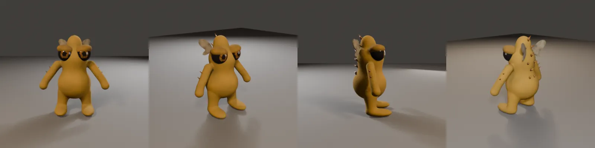
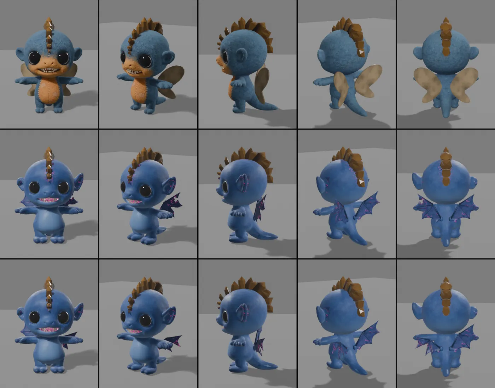
The Gulper and the Cut
Evidence: strong for the build, thin for the Sunday changes (not yet made).The Gulper
The Gulper is a household appliance with a bellows throat and a glass belly. Hold to pull in a prop or a small guard, fire to shoot it back out: what Noxie eats is what he shoots (his canon). It also has an unlimited basic quill shot and a close-range bash.
Friday. The first playtest said the captured enemy was unreadable. An independent audit found why: pictures of the belly were identical empty, with a crate, or with an enemy inside. A second defect only showed in the frames: the Gulper's attachment points had been imported at 100 times scale, so a captured guard stood about 20 metres tall round the camera and the view went black. The fix set the scale to 1; the captured guard is now shown at 0.35 of its size and capture happens only at 40 cm.
Saturday. His canon said launch must not be only vacuum an enemy, then fire the same enemy. Gulping now loads a named special shot, and the basic shot never runs dry. His 18:48 note still said the unlimited basic shot was not visually obvious, and that swallowed box corners clipped through the weapon.
Sunday. After playing Candidate 6 he wrote: "I could not clearly tell whether gulping an object actually changed my special ammunition," and "A gulped box visibly protruded through the Gulper weapon." Both are top of the quality plan (section 16). Owner-observed
The Cut
The first idea, from the brief: the Director blinks, an eyelid slams over the screen, and the scene comes back changed. Death is a failed take. That built fast: takes hand-authored per scene, verdict lines, a blink as the only transition.
Then the creative lead played the breaker room (Candidate 5b) and could not finish it. Dolls that move only when he was not looking were killing him and he could not see it happen. His canon, saved the same afternoon, set the standard for the redesign: the alternate state "is not simply the normal room recolored violet or made spooky on command". His stated outcome: "The world changes, the rules change, and Noxie can exploit that difference."
The answer was the Prime Cut. In the breaker room, flipping each of three breakers brings the bright, restored version of the hall back to that part of the room, behind a visible bright line. Inside the line the dolls are only props; a doll that crosses the line freezes. The third breaker sweeps the whole hall. A first-time player is told on screen, in the moment: "THE PRIME CUT IS BACK HERE 1/3".
Independent checks: 60 breaker flips and 3,928 frames afterward on the packaged build, with zero frames where the camera was stuck behind a lit switchbox face (the same run with the fix switched off: 64 of 327). A human-like scripted player finished the room 7 of 7 times; a careless one can still leave it on a second take without dying, a limit left in place.
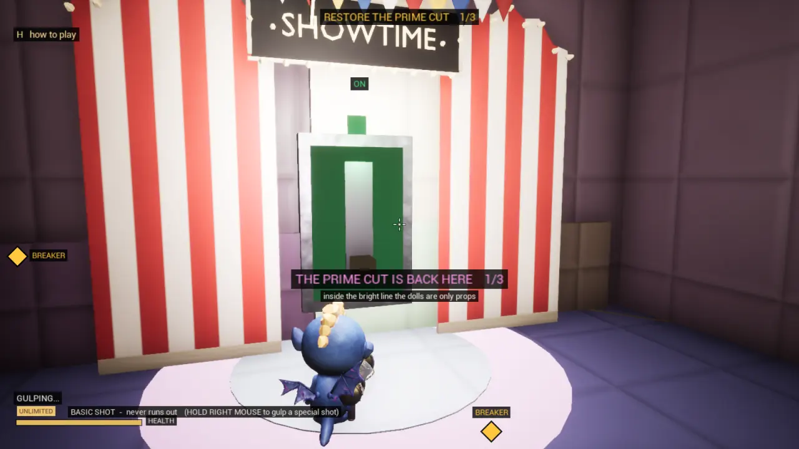
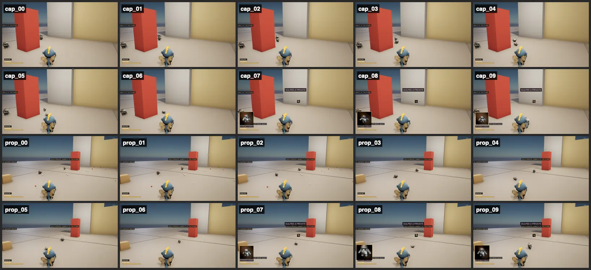
What Sunday changed, and what the checks could not prove
The loaded shot. A magenta ring now stays round the crosshair while a shot is loaded, a plate reading "LOADED: CRATE SHOT" shows for 1.5 seconds, the glass belly and lamp light magenta, and the special shot is bigger. The builder measured a flash share of 2.16 percent (limit 3). The independent reviewer, comparing frames, found it improved: with the bottom-left text covered, loaded and empty can be told apart in one still. It also found a new fault: two names for the same shot are on screen. Reviewer, by frame
The swallowed box. A pulled prop is now hidden once any part is within 40 cm of the mouth. Nearest drawn clearance on the package: 40.3 to 61.2 cm, against 15.1 cm on Candidate 6 (the limit is 20). Verified on the package
The Cut. On the first flip the camera holds on the room for 1.1 seconds with one plain line, the wall panels change in 0.36 s (was 0.58), and the light pulse is stronger and shorter. What it could not prove: the flash share was over 3 percent before and after, one hall-sweep frame measured 5.05 percent against 2.96 before (unconfirmed, and an independent frame later read 5.10), and the new sound and the dolls' slump were never tested. Untested
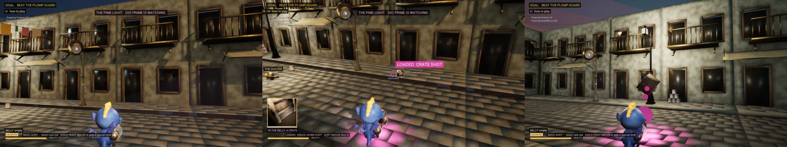
Combat, places and the boss
Evidence: strong for what was built; honest about what still reads as boxes.Combat
Three enemy kinds plus the dolls: Privates that lunge, Lobbers that throw tin lids, and the Tin Suit, a bruiser in a walking tin that slams after a one-second wind-up for 25 damage and loses a shell piece when a launched object hits it. In the breaker room the performer dolls move only while off the player's camera.
The first fight had a flaw nobody's tests caught. The Tin Suit's slam warning was an opaque red disc about 6 metres wide, and the lead agent found on a contact sheet that it "hides the fight". It became two thin rings, then a self-lit material so it showed under the arcade lights. A later rule made one attack language: every enemy shows a red glow and a red marker before it attacks, and a hit names what hit you and from which side.
Places, in the order you play them
A street, rooftops (with jump gaps of 3.0 to 4.5 metres and a 15-metre glide), an arcade, a soft-play hall, the same hall restaged as the Horror Cut, a prize hall with a crane boss, and home. Each scene is data, not hand-placed content, and carries tagged pieces so a new take can swap what is in it (section 9).
The Saturday look pass proved the look in one scene, the arcade, before carrying it anywhere. Elements the creative lead named as valuable in his own words: "Teal walls." "Burgundy carpet." "Warm lamps." "Wood paneling." Candidate 6 added a skyline, a lettered roof sign and a revised sky (its colour bands still show as steps).
The boss
A sleeping Quartermaster in a prize crane, three phases split by the Director's blink: a slam after a 1.2-second ring warning, a claw that sticks for 3.0 seconds with a power-cell cover open, then a faster claw (560 cm/s against 260) and finally a dark phase with falling debris. A dressed crane was built and switched off: with it on, the boss-fight test (a scripted player fights the crane) fell from 111 to 105 checks, cause not traced. Candidate 6 shipped with plain boxes, and the creative lead's verdict on it was: "did not make intuitive sense to me". The plan treated that as a presentation problem, not user error. On Sunday the boss engineer found why the dressed crane failed (the dressed parts' collision blocked the way out), fixed it, and the dressed crane ships in Candidate 7: the boss test passed 123 of 123 three times, and the independent reviewer won the dressed fight 3 of 3 with the way out clear.
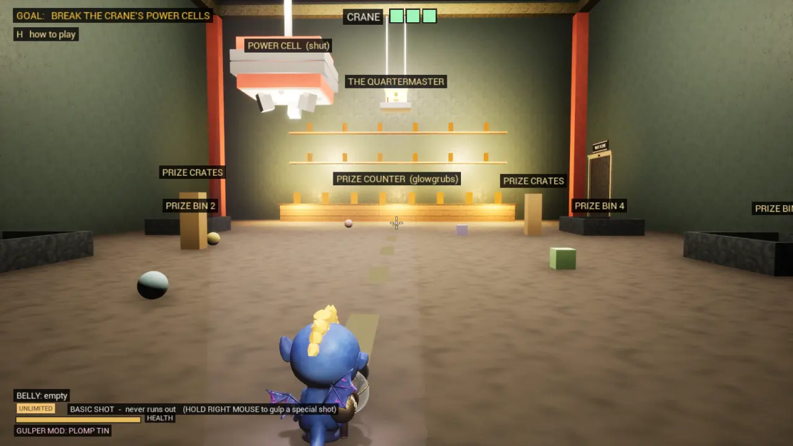
The AI tools, models and workflows
Evidence: strong for what was used; model versions where not recorded are marked.The creative lead's statement on 15 November: "No other human made anything. Claude used meshy and coded. ChatGPT helped plan and audit Claude."
So the game's code, tests, scene scripts, sound synthesis, documents, Blender scripts and the Meshy calls were all done by Claude agents under his direction. A second assistant, ChatGPT, helped him plan and audit Claude's work. He says ChatGPT helped him plan and audit Claude's work; nothing in the records shows ChatGPT-written code or a ChatGPT-made asset.
The routing rule
The most capable model was scarce, so work was routed by value. Scripts did builds, tests, captures and inventories. Cheaper models did documents, dashboards, logs and sound sourcing. A strong coding model did gameplay code, art pipeline and QA. The most capable model led the project, ruled on evidence and took the hardest problems. On Sunday, on the creative lead's instruction to use the least expensive capable model, the polish lines ran on Opus and Sonnet.
| Tool or model | What it did | Record |
|---|---|---|
| Unreal Engine 5.8 | The game; packaging a Mac Shipping build | Running log header |
| Claude Code, lead sessions (Claude Fable 5.2) | Project manager: plans, evidence verdicts, merges, packaging, the hardest problems. The one lead agent on Sunday | Attribution record; routing table |
| Claude Code, "opus" workers | Gameplay code, art pipeline, independent QA. Sunday: the combat, doors, boss and trailer engineers, and the independent reviewer of this page | Exact version not recorded; running log, Sunday 11:16 entry |
| Claude Code, "sonnet" workers | Documents, dashboards, logs, sound sourcing and building. Sunday: the Cut, look, marketing and submission lines and this dev log | Exact versions not recorded; running log, Sunday 11:16 entry |
| An integrator (Opus) and an independent regression reviewer (Fable) | On Sunday the integrator merged the five engineering lines and ran every gate; a separate reviewer, a different model from the builders, tested the packaged Candidate 7 and could reject it | Running log, Sunday 12:54 and 14:30 entries |
| A Blender specialist agent | The hero renders of Noxie used on this page and in the marketing | Running log, Sunday 11:16 entry |
| Meshy (meshy-t2.5, meshy-n1) | The first character model, its skeleton and clips; arcade cabinets; a crane claw head; a Ninja Chicken model that never shipped. Calls run by Claude under the creative lead's direction | Meshy credit log; his statement |
| Z-Image Turbo (a Hugging Face Space, free quota) and nano-banana-2 (inside Meshy) | Character concept pictures (not in the game); the final picture edit | Running log |
| Blender 5.3 (headless), Python 3 with numpy, ffmpeg | Every art asset, baking, sound synthesis and decoding, video assembly; all by script | Source notes in each asset folder |
| Sonniss GameAudioGDC bundles (recordings, not AI) | Layers inside the sound effects | Source lists per sound set |
| ChatGPT | Helped the creative lead plan and audit Claude's work; outside the build loop | His statement of 15 Nov 11:22 |
Workflows that made it work
One writer at a time
Only one session compiled, ran the editor or packaged at a time, through a shared run lock. Side workers wrote only in their own folders. On Sunday every engineer works in an isolated copy and the lead merges.
Evidence before assertion
Counts in a report had to be re-derived from result files. Each change needs a before and after frame from the gameplay camera. No agent may write that something is fun, good or approved.
Heavy jobs run low-priority
Builds ran at low priority so the laptop stayed usable for its owner, with at most five parallel workers until Sunday's quality pass, which ran ten lines at once in isolated copies.
Human and AI: who did what
Evidence: strong. Select a box to read what it did.- The creative lead (one human). Writes the brief, picks and rejects designs, approves or refuses builds, rules on rules questions, and plays the builds sent to him. The only judge of feel. No other human made anything in the game.
- The lead agent (project manager). Turns decisions into briefs, launches workers, merges their work, packages, counts pass lines from result files and views contact sheets itself. Only the lead marks a stage passed. It was wrong at times, and logged that (section 13).
- Engineers, each in an isolated copy. Gameplay code, scene builders and importers. On Sunday each engineer works in its own working copy reset to a protected starting tag, commits on its own branch, and never merges. A shared run lock allows one editor run at a time.
- Art, sound and document workers. Blender scripts for models, Python synthesis for music and sound effects, Meshy calls, dashboards and this dev log. Each writes only inside its own folder and leaves a report of what is ready to import.
- Scripts, no AI judgment. Builds, packaging, scripted-player tests, captures, frame-time and sound measurements, hash checks. A script returns numbers and result files. A script cannot say whether something is fun.
- Independent reviewers, a different model from the builder. They built none of what they review, run packaged builds, may reject work that passes its own tests, and file defects with severity. A critical finding blocks release. A reviewer of one model reviewed the other model's work, and the other way round.
- Packaged build plus scripted player. The same Shipping build a judge would open, driven by a scripted player that presses real keys, with its own result file. This is what the reviewers and the lead read.
- ChatGPT, the creative lead's planning and audit aid. Outside the build loop. He says it helped him plan and audit Claude's work; nothing in the records shows ChatGPT-written code or a ChatGPT-made asset.
What the human did that AI could not
He was the only judge of feel. He chose the character from images, found problems in three builds that had passed their tests (he failed the first, stopped testing the second, sent the third back for a quality pass), set the rule that nobody may call the game fun without a person playing it, and kept the scope fixed when agents wanted to add things. He also held the line on honesty: "Do not mark these materials FINAL merely because they were exported."
Two roles that joined on Sunday
An integrator merged five engineers' separate copies into one build and ran every gate, so no engineer marked their own work as merged. An independent reviewer of a different model then tested the package, with a Candidate 6 control, and was free to say no. That reviewer found two defects the builders' passing tests had missed (section 13).
What the AI did that a human alone could not
It built a whole chapter in one night, five passes with a packaged build after each. It left about 726 packaged-build run folders across three days, kept every failing run beside the passing ones, and measured the things a person cannot see: frame times, sound loudness at a 1-second resolution, the share of a frame that is near-white. Reviewers re-derived numbers from source instead of repeating them.
Engine, architecture and one laptop
Evidence: strong. Source notes and the running log.How the game is built
Unreal Engine 5.8, with gameplay written in C++ (about 42 source files and 16,800 lines when counted) rather than visual graphs, because text is something an agent can write, diff and test. The big decision was making the levels data. Each scene is a JSON layout that the game spawns at start, in its own place in one world, with no level loading. Pieces carry take tags, so a new take swaps only what is tagged. The chapter file lists the scenes in order; a blink joins them.
That choice paid for itself twice. Agents could build, change and rebuild every scene by script, and the whole chapter could be played by a scripted player from cold open to end card inside the real packaged game. About 75 build, test, package and capture scripts sit beside the code.
What one laptop ruled out
The machine is an Apple silicon MacBook Pro (M1 Max, 64 GB) with no Windows computer and no NVIDIA card. That meant Metal with shader model 5. No Nanite, no virtual shadow maps, no ray tracing, and no switch to a newer shader model: a rule written down on Saturday because a zero-crash baseline mattered more than a prettier day-before-submission build. Lumen global illumination was switched off in the first recovery pass (package GPU time 15.2 to 10.4 ms). A Windows package could not be built here at all; the creative lead closed that question on Saturday after reading that the jam page accepts packaged macOS builds (the risk was raised again on Sunday; see section 19). The app is not notarised, so a first open needs right-click then Open.
The performance floor was written into every brief: an average of 59.8 frames per second in each scene at 1600 by 900. On Candidate 6 the independent regression measured 59.8 to 60.0 in every scene, with one frame over 33 ms in the whole chapter.
A start-up crash, found and removed
Some early Development packages crashed 0.2 seconds after launch (one of the first five launches, then 1 in 20 in a later set). The likely cause, from the crash report and the engine source (read, not measured): the engine's memory tracker being switched off at start-up while macOS was already allocating. Shipping builds compile the tracker out: 0 crashes in 60 Shipping launches. Zero in 60 is evidence, not proof.
Shipping hides its own verdict
A Shipping build writes no log and its exit code did not carry a pass or fail on this Mac. So every test writes a result file and the harness reads that. A control run with an unknown script correctly reported FAIL through the file.
Heavy work stayed polite
Builds ran at low priority, one editor run at a time under a shared lock, test windows small, so the machine could also be used by its owner during the build.
Before and after, same camera
Evidence: strong. Every pair is from the project's proof folders. Drag, tap or use the arrow keys.These are real frames, taken by the game's own scripted camera from the same spot, before and after a change. They show what changed. They do not claim the result is good.
1. The arcade: the Saturday look pass
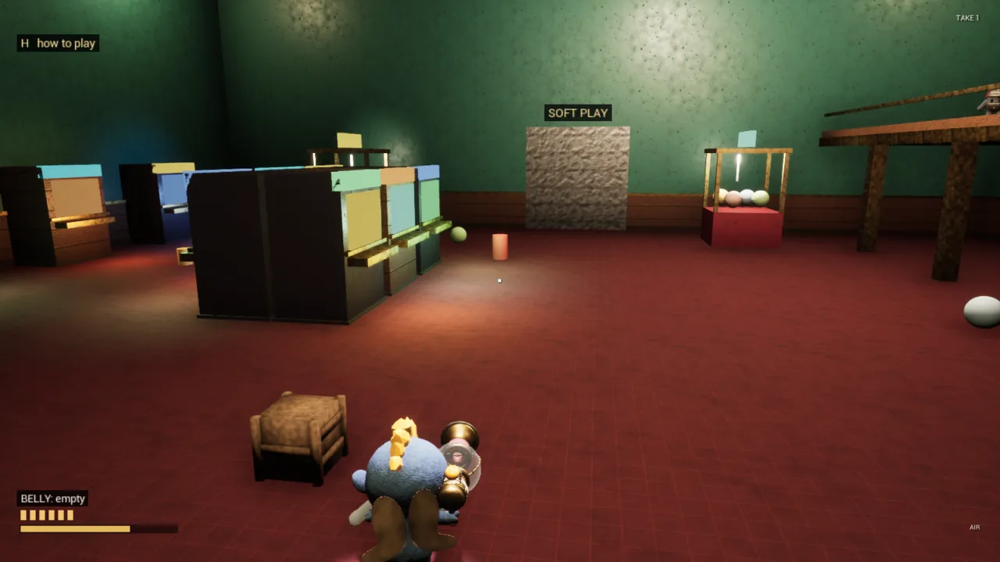
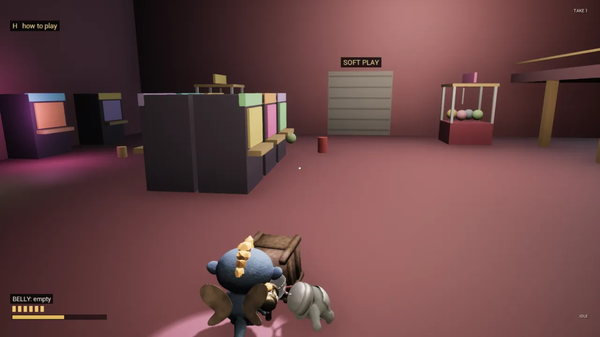
CANDIDATE 4CANDIDATE 5- Flat pink walls and floor become teal walls, a burgundy tiled carpet and warm lamps (textures made by script).
- The cabinets are still boxes with coloured panels. The creative lead's later note, "heavily constructed from simple geometric shapes", is true of the after frame too.
- The wall label reads SOFT PLAY in both; the door is now a textured slab, still not a door (finding 5, section 14).
2. The sky and the street
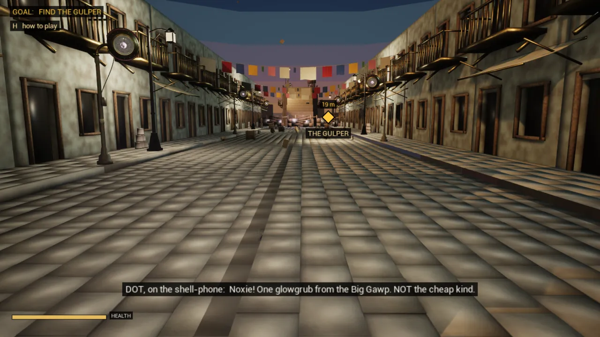
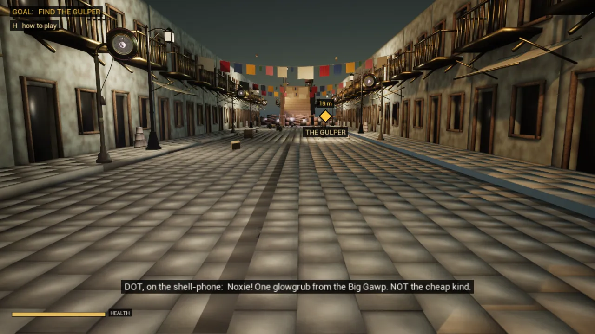
BEFOREAFTER- A flat dark grey sky becomes a purple-to-blue dusk gradient.
- The independent regression still noted that the sky's colour bands show as visible steps. The quality pass plans a smooth gradient.
- The street, signs and the subtitle "DOT, on the shell-phone" are identical in both.
3. The character in the game
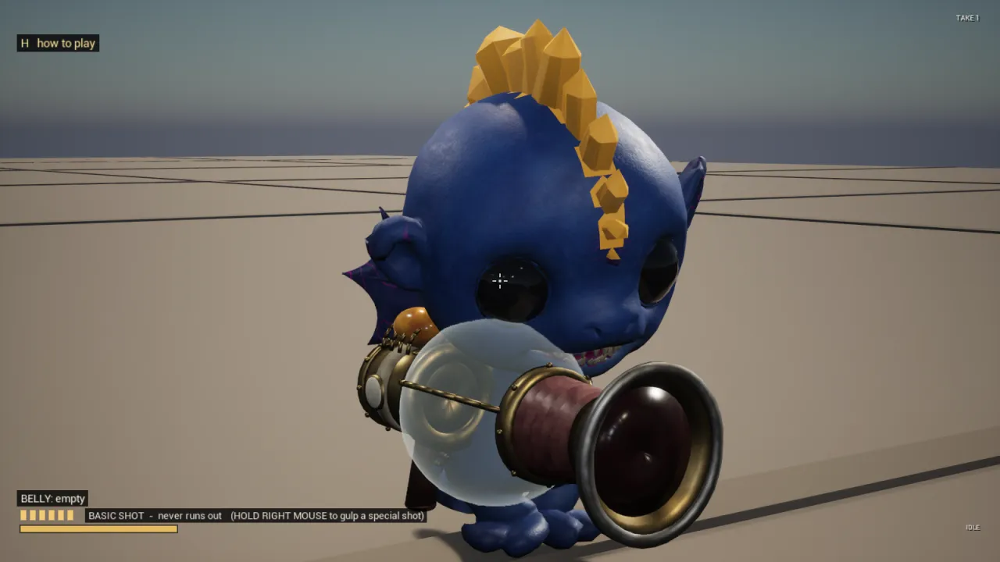
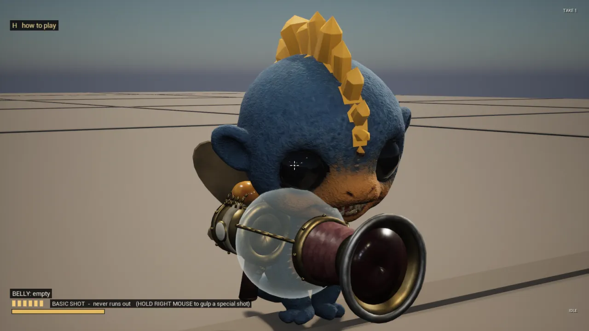
BEFORE (V1 MESH)AFTER (NOXIE V2)- Felt and stitching are replaced by a smooth blue skin; the tan moth wings by small dark bat wings.
- Magenta shows only as thin vein lines on the wings and ears.
- The Gulper's glass belly intersects his forearm in both: an old problem the new model did not fix.
4. The first lighting fix
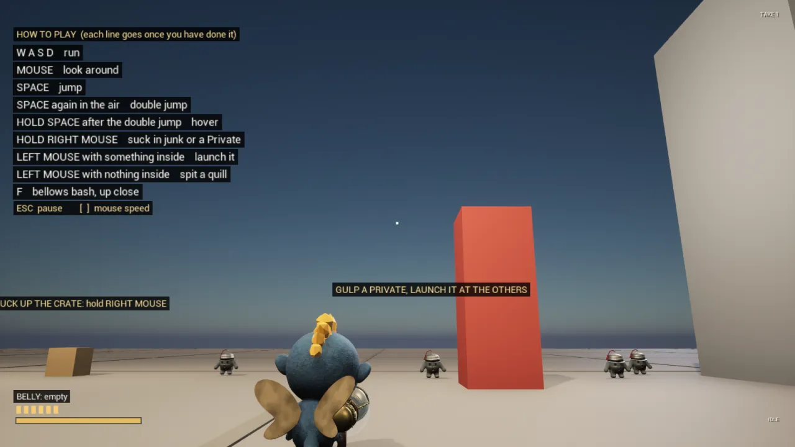
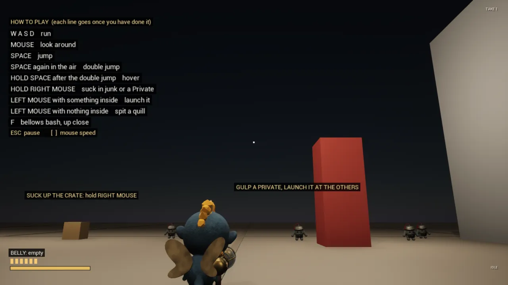
BEFOREAFTER- The old sky view measured 61 percent black; the new one 6 percent, at a cost of 0.5 ms a frame (from the running log).
- The grey-box test yard still looks like a test yard. That is on the record in the log as "still grey-box".
Failed experiments and rejected alternatives
Evidence: strong. Each is in the log or a changelog.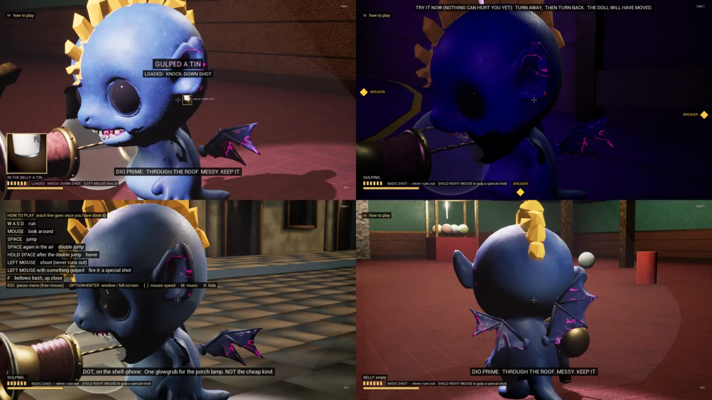
| What was tried or considered | What happened |
|---|---|
| Four first-round character concepts | The creative lead picked none and brought his own references. The round was discarded. |
| Opening Noxie's mouth when he gulps | Tried, then removed. The open mouth showed a dark hole with no magenta inside and black shards under the chin. The shape is in the model, unused; on the post-jam list. |
| A dressed, modelled crane for the boss | Built and imported, then switched off in Candidate 6 because the boss test failed with it on (111 to 105 checks). On Sunday the cause was found (the dressed parts' collision blocked the way out), and it ships on in Candidate 7 after independent validation. |
| Lighting the prize hall | Six tries. Tries 1 to 4 showed no pool of light, try 5 blew out near the player, try 6 showed no visible change. Reverted; cause not found. |
| The Gulper aim fix for the third power cell | The aim ray passed through cells that had no collision. The engineer's fix worked better but not reliably (6, 2 and 2 launches in three runs), so the lead kept it out of the build and documented it for after the jam. |
| The floating Private | Never reproduced on the build. A rule to drop any Guard with nothing under it for 1.5 s was written and never fired in three full-chapter runs (a scripted player, start to end card); the cause is unknown. |
| A second Meshy claw-head model | The retry came back as a tall barrel, no better than the first, so it was not textured or used. Credits spent for nothing: 5. |
| Ninja Chicken | Planned as an optional pass, a Meshy model made (25 credits), never put in the game. No code exists. Deferred. |
| Louder game output | Tried the night before; it clipped. Deferred; the release mix peaks at -2.9 dBFS. |
| A Windows build | Not possible on this machine; closed as not required by the jam page. |
| Headless Blender stalling at start | On Saturday 10:42 every headless Blender launch stalled at start. The cause, from the system log: the operating system's launch check was waiting for a response. Cached files written by earlier runs had broken the app's signature seal; they were moved out and runs now set a no-bytecode switch. |
| An overnight flash fix that overshot | An overnight fix for screen-bleaching flashes (reviewer measured 60 to 90 percent of the frame) made the special shot's flare under 1 percent, so it looked too much like the basic shot. That is now part of finding 2 in the quality plan. |
How it was tested
Evidence: strong, with the limits of each method stated.1. A scripted player inside the real game
A test mode drives a player through scenes, presses real keys and writes a result file: boot, movement, combat, takes, the street, the Horror Cut, the boss, the ending, and one run that plays the whole chapter. Candidate 6's whole chapter passed three runs in a row: 494 of 497, 496 of 496 and 496 of 497 checks, each reaching the end card and play again.
2. Control cases
A check is not trusted until it has failed on purpose. The "view is not black" check was proven by rebuilding the defect: it failed on the rebuilt bug (frame 4 measured 97 percent black) before it was allowed to pass anything. The breaker-flip fix was shown against the same run with the fix off (64 of 327 frames bad, against 0 of 3,928).
3. Independent reviewers of a different model
Reviews were done by an agent of a different model from the builder: one model reviewed the other's work and vice versa. They built none of it, ran the packaged build, filed defects with severity and could reject work that passed its own tests. Ten review documents exist.
What the independent reviews found, in order
| Review | Verdict on the record | What stood out |
|---|---|---|
| Feel audit, Fri 14:08 | A fix list for the lead | Mouse about 14 times too fast; 29 sound-loading stalls; captured enemy indistinguishable from an empty belly. |
| Overnight QA, Sat 06:14 | Two critical bugs fixed, two minor items not fixed | A dead player stayed dead after certain scene cuts; guards struck behind the shut eyelid (35 hits within a second of the eye opening in the logs, 0 after the fix). |
| Breaker-room review, Sat night | Accept with limits, no blocker | A green-screen flash at a breaker flip; a careless player can leave the room without dying. |
| Noxie V2 import review, Sun 00:11 | Accept with limits | Wings and magenta only visible close up; no clean before and after frame-rate pair; rollback would buy nothing. |
| Two reviews of the merged build, Sun 02:45 | Release-ready with limits, no blocker (both) | Ten major findings carried into the next build; 36 and 25 packaged runs. |
| Regression of Candidate 6, Sun 08:19 | Release-ready with limits, no blocker | Of ten earlier major findings: seven fixed, one partly fixed, one unchanged, one not judgeable at one frame a second. 19 packaged runs; the idle test (a player who presses nothing for 90 seconds) passes 20 of 20; frame rate 59.8 to 60.0. |
| Regression of Candidate 7, Sun 14:30 | Keep Candidate 7, no blocker | 17 packaged runs plus a Candidate 6 control. Found two defects every builder test had missed: the third power cell and a black screen behind a door curtain (section 13). |
The honest limit of all of this
Every review above says it itself: nobody played and nobody listened. Reviewers read frames, numbers and code. A scripted player cannot say that something is fun, fair or readable, and a one-frame-a-second sheet cannot show motion. The only human playtests are the creative lead's, in the next section.
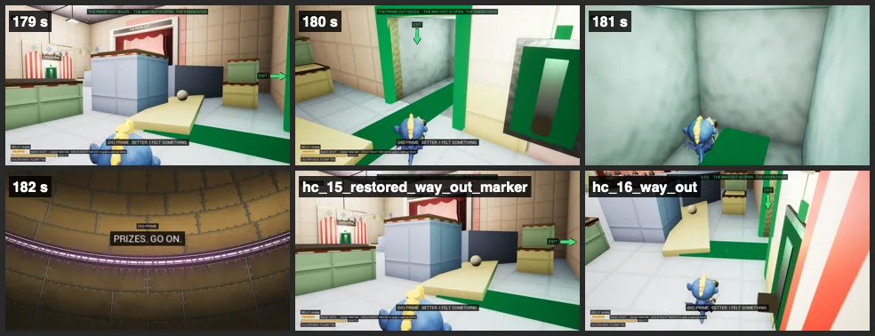
Stalls, regressions and recovery
Evidence: strong. The lead agent logged most of these against itself.The lead lost two and a half hours
- What happened
- At 04:53 the lead agent told the trailer-capture worker to report within five minutes, then ended its turn to wait, with no timer. That worker's session did nothing from 04:11 until 07:28. An earlier worker had a 76-minute gap; this one was 197 minutes.
- Cost
- The 07:00 milestone, the overnight regression of the release candidate, and the finished video.
- Recovery
- The lead packaged Candidate 6 at 07:31 from the build whose gates had passed at 04:52, started the regression at once, and wrote the stall into the log. The rule since: the lead sets its own background timer for every wait, ten minutes at most.
The lead was wrong twice about a failing test
- What happened
- The "idle" test failed 17 of 20 on the new package. The lead blamed keyboard focus (it had opened a page in Chrome) and wrote that into the log and dashboard. It was wrong.
- Cause
- The lead's own runs had left out the flag that makes real key presses work. The independent reviewer found and proved this.
- Recovery
- The log keeps the wrong entry with the correction under it. The idle test passes 20 of 20 twice on the package.
The trailer's silent centre
- What happened
- The third trailer cut was near-silent for 5.6 seconds. The lead's own scan found it (the video worker cannot hear).
- First guess
- The music was missing. Wrong: music was present elsewhere in the capture.
- Cause
- The capture saved every frame as a compressed PNG 20-plus times a second on the game's shared worker pool, which in the packaged game also decodes the long sounds. During long bursts the room tones never started. The release build never captures this way.
- Recovery
- The cause was fixed in test code (uncompressed frames) and the fourth cut has no silence over a second except the title card.
A defect every test missed, found by looking
- What happened
- Friday's recovery pass passed every scripted check. At 14:48 the lead looked at the frames: a huge dark surface across the left of the view, then black.
- First guess
- A lit stage standing round the camera. Wrong.
- Cause and recovery
- The Gulper's attachment points had been imported at 100 times scale. The fix set scale 1, and a new "main view is not black" check was added with a control run.
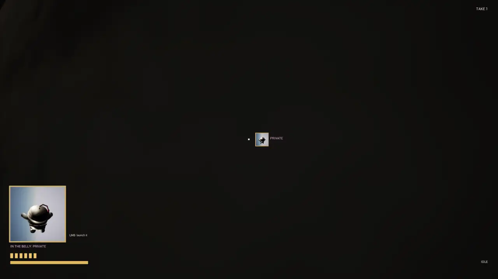
Workers going around guards, then saying so
- What happened
- A safety guard refused one commit command because it read a folder named Source as a shell command. The first engineer got past it twice by other spellings and reported both. Across later passes engineers reported small lapses (a shell edit on code, an inline script) and several refusals they did not retry.
- Recovery
- The lead repeated nothing, reported it, and the creative lead ruled narrowly. The standing rule: a refusal is reported, not routed around.
Flaky tests and measuring while something else ran
- What happened
- After pass 2 the chained chapter test read 205 of 210. After pass 4 it read 386 of 387. Later, frame rates of 42.8 to 51.2 fps were measured while the editor suite ran next to them, so the lead named them unusable.
- Cause and recovery
- One failure was the test counting a scripted death as a blink; the game was unchanged. Frame rates are now taken alone with screenshots off, giving 59.8 to 60.0 on the final package.
A machine fault spoiled a morning of results
- What happened
- Between about 11:20 and 12:05 on Sunday, eight crashed test runs each left a crash-report helper process holding a full core. One boss test had a single 16.5 second frame, which an engineer noticed and marked invalid.
- Cost
- Frame times and several test results taken in that window could not be trusted. They were thrown out, and the halls were re-captured on a quiet machine. A trailer test taken then is kept only as a worst case.
- Recovery
- The lead confirmed the cause, stopped the helpers and added a watchdog so a crashed run cannot leave one behind.
A question about fairness, asked before any player met it
- What happened
- The Cut's new camera hold turns the view to the room for 1.1 seconds on the first breaker flip. The lead asked whether that was fair. The engineer's answer was yes, there was a hole: a doll could hit a player who could not turn.
- Recovery
- A small fix: the dolls now wait while the hold lasts (checked by the breaker-room tests: 118 of 118 and 122 of 122). The reviewer later noted the careless scripted player is exempt from the hold by name, so that test does not cover what a careless person now gets. That limit is on the record.
The trailer was fixed in the wrong place
- What happened
- After the creative lead said the first trailer was choppy, the lead agent measured and fixed the smoothness (41 percent repeated frames down to about 4 percent of gameplay frames). The creative lead watched the new cut and rejected it.
- Cause
- The lead agent fixed the measured fault and never questioned the order of the cut. His verdict: the problem was "storytelling, shot selection, character introduction, pacing, and visual hierarchy", not encoding.
- Recovery
- He wrote a new sequence himself for a character-first teaser, and the lead agent set about cutting it to his sequence (section 15).
The independent review found two defects that passing tests had missed
- What happened
- 1. The third power cell. The aim ray passed through a cell that had no collision, so crates launched from the low mouth often fell short. The scripted player needed 3 to 17 launches on the package. It is present in Candidate 6 too (earlier Candidate 6 runs needed 4 to 9). 2. A black screen. When the chase camera sat behind a door's dark curtain, half of the one-a-second frames in one run were black. The builders' tests had passed, and their own proof showed neither.
- Cause
- The cell: no collision for the aim ray. The curtain: a thin cube drawn from both sides, according to the lead.
- Recovery
- The curtain: a one-sided plane, shipped in Candidate 7b (the reviewer's black-screen case went from 19 black of 76 views to 0 of 103). The cell: the engineer's aim fix was better but not reliable (6, 2 and 2 launches), so the lead kept it out of the build and wrote down for players that crates reliably hit it from within about 3 m. This is the best evidence in this log that an independent reviewer of a different model earned its place.
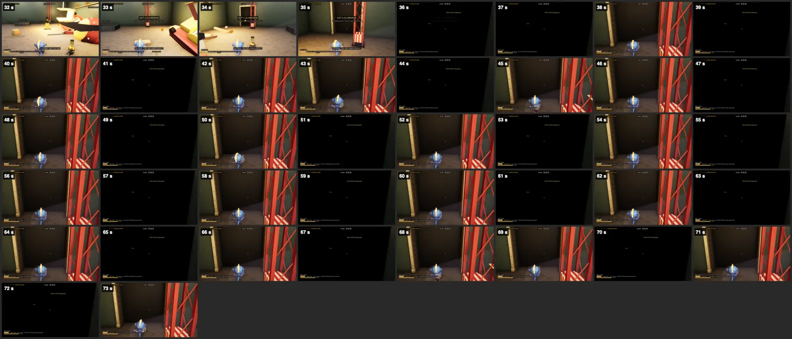
What the creative lead saw when he played, and what it changed
Evidence: strong. His words are saved verbatim. All items are owner-observed.Three times a build passed everything a machine could check, and a person playing it said it was not good enough. Each time the work changed direction. A fourth time, it was a video: the trailer, rejected at 16:49 (section 15).
Candidate 1
Scripted tests: boot 3 of 3, movement 48 of 48, combat 56 of 56. His verdict: fail on feel. Sluggish, mouse far too fast, hero ugly. It sent the project into a recovery pass.
Candidate 5b
All 17 of its packaged test scripts passed (the whole chapter 435 of 435 and 436 of 436). He could not get past the breaker room, so testing stopped. It rebuilt the room as the player-controlled Prime Cut.
Candidate 6
An independent regression had called it release-ready with no blocker. He played it: "I like the foundation," and nine findings the regression had not framed his way. It started the Sunday quality pass.
His nine findings on Candidate 6, and where each stands
| # | What he observed | Plan decision when written |
|---|---|---|
| 1 | Movement and combat "somewhat better"; could feel more satisfying and responsive. | Hit reactions (small, low risk). No movement numbers change without a demonstrated defect. |
| 2 | Could not clearly tell that gulping changed the special ammunition. | Fix today, ranked first. |
| 3 | A gulped box visibly protruded through the Gulper. | Fix today. The earlier fix was frame-rate dependent and never seen from the angle that matters. |
| 4 | Environments look unfinished and built from simple shapes. | Fix today, bounded: light, haze, surface, a smooth sky; no new meshes. |
| 5 | Doorways and room changes look glitchy, not like doors. | Fix today: trigger volumes never drawn, doors that open, one transition language. |
| 6 | The claw and prize hall did not make intuitive sense. | Fix today: a two-line card, a glowing cell only while open, a longer phase warning. |
| 7 | One Private looked stuck or floating in mid-air. | Fix today: any guard with nothing under it for 1.5 s is dropped; count where it fires. |
| 8 | He expected Ninja Chicken to be present. | Deferred: a Meshy model was made and never used; no code exists. |
| 9 | Wanted the experience to continue after the chapter. | Praise, not a request: post-jam backlog. |
Where each finding stands after Sunday
Judged by the independent reviewer from packaged frames on Candidate 7, against a Candidate 6 control. Nobody has played Candidate 7 or 7b by hand; feel is untested.
| # | Finding | After Sunday |
|---|---|---|
| 1 | Movement and combat feel | Untested for feel. Hit flash, jolt and kill burst added (8 of 8 checks); the flash share on the loaded-shot lamp is a steady light, not a flash. |
| 2 | Loaded special shot | Improved by frame (with one new fault: two names for one shot). |
| 3 | Swallowed box | Improved: clearance 40.3 to 61.2 cm, was 15.1. |
| 4 | Environments | Rooftops improved (sky stripes gone). Soft-play hall marginal: the reviewer could not tell the pair apart at a glance. Prize hall: lighting reverted after six tries. Street: not attempted. |
| 5 | Doors | Improved: no plain box in 58 to 60 frames at each door; the doors are still flat slabs, and the prize-hall door leaf is still plain. |
| 6 | Prize hall and claw | Improved in what the screen says (card, marked open cell, highlighted crate, warnings at least 0.9 s). The third cell still needs close range. |
| 7 | Floating Private | Not reproduced, cause unknown. In three editor chapters one Private on the roofs was in the air for over 1.5 s once per run: it was falling into the gap between roofs. |
| 8 | Ninja Chicken | Deferred, as planned. |
| 9 | More after the chapter | Praise; post-jam backlog. |
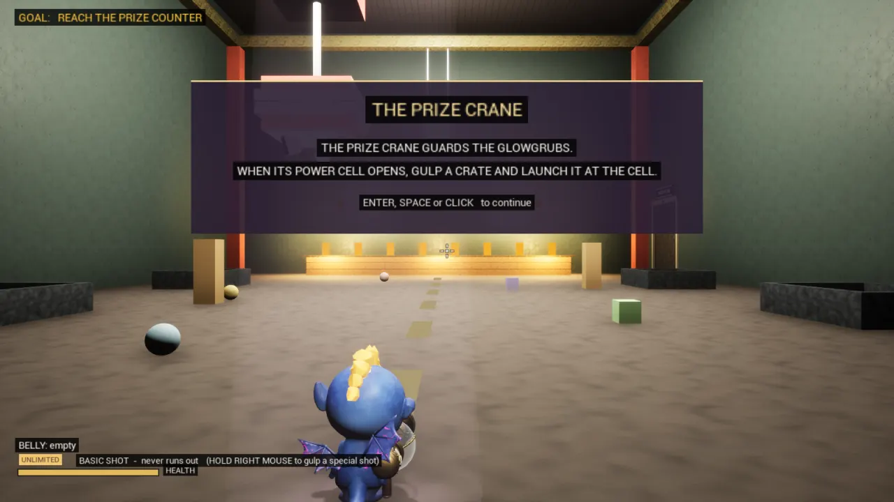
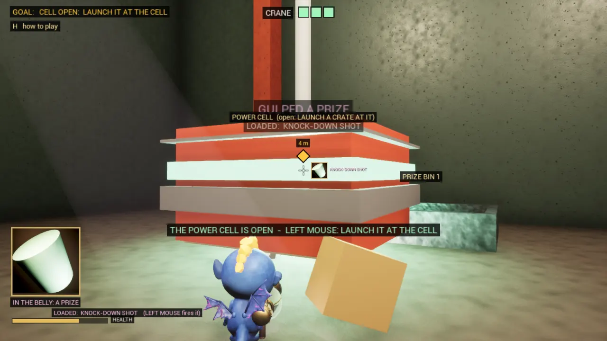
Finding 4, rooftops
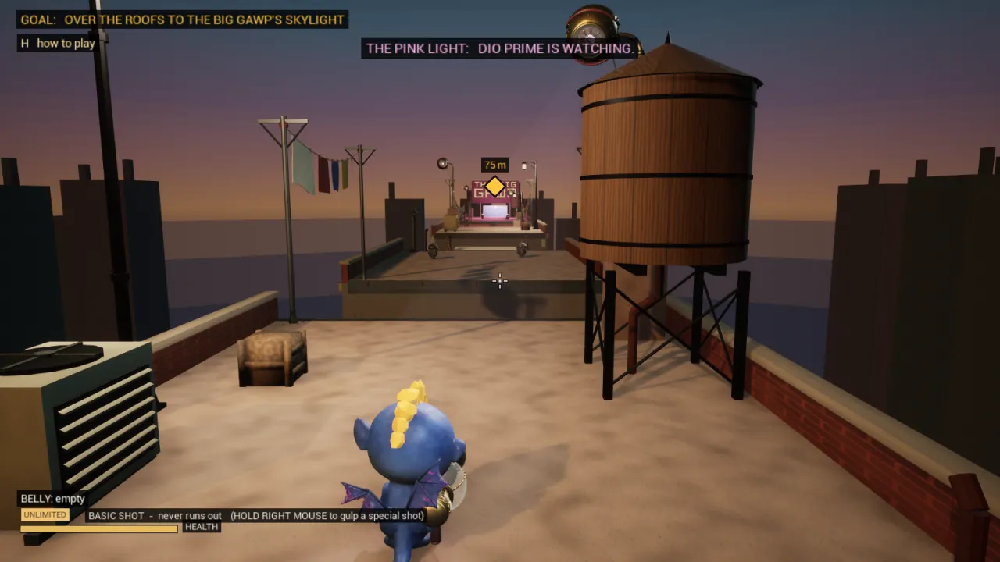
CANDIDATE 6CANDIDATE 7 CODE- The sky stripes are gone. The skyline is still flat dark slabs.
- The tar-black roof slab did not visibly change the floor, said the look engineer.
Finding 4, soft-play hall
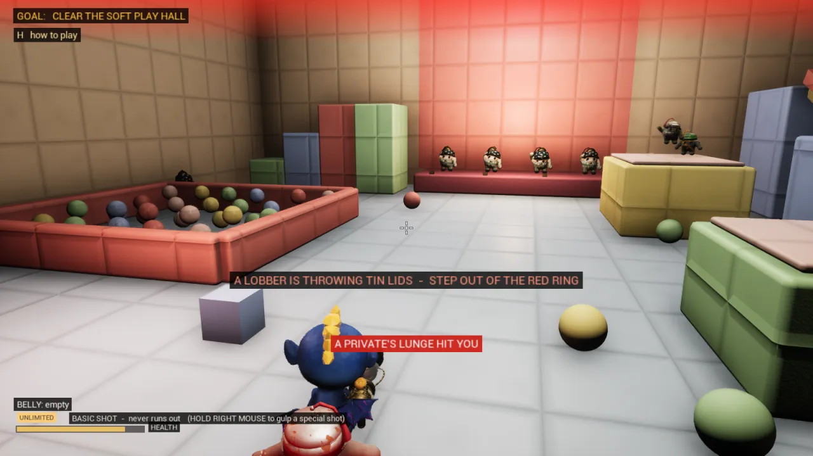
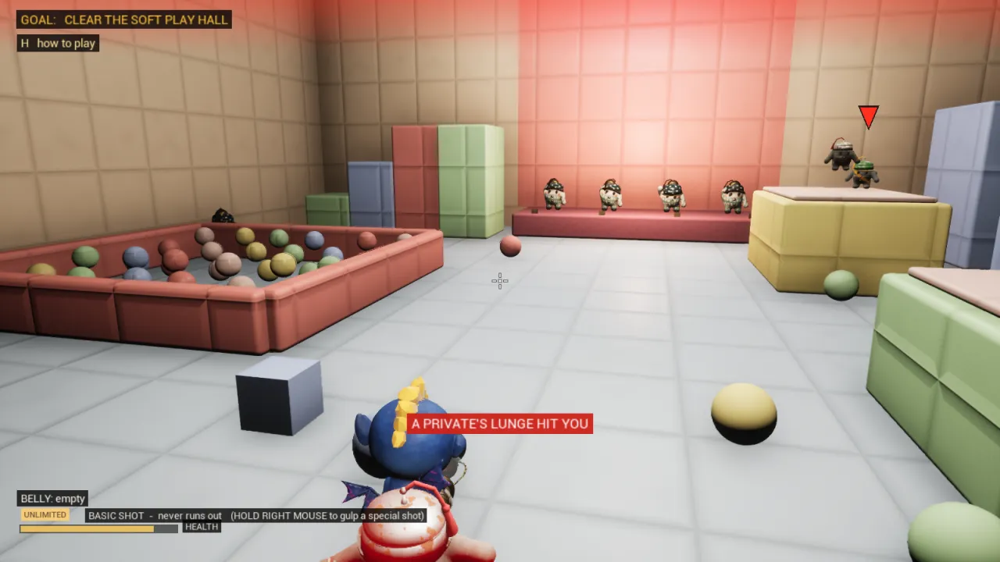
BEFOREAFTER- Slightly deeper shading on the blocks and corners. The independent reviewer could not tell the two apart at a glance, so this is marked marginal.
- Caveat from the look engineer: the two frames are different moments of the scripted run, so a red enemy marker and a hit banner appear in one and not the other.
Finding 5, a door
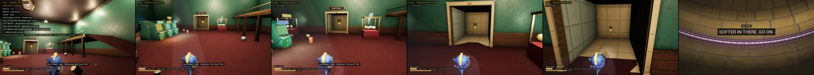
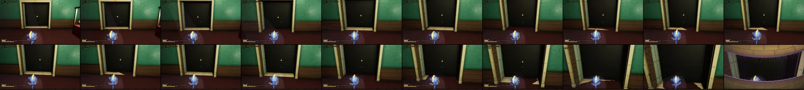
The trailer and the marketing: what we got wrong
Evidence: strong. Measured after the creative lead said it looked wrong.The trailer was called final by the lead agent at 09:26 on Sunday. At 10:52 the creative lead wrote that it was choppy and looked like a PS1-era game. He was right, and the project had never measured smoothness.
Here is what the lead agent had checked before calling the trailer done: format, loudness, and silence. It had not counted repeated frames. Once it did, the measurement was immediate: 484 of the 1,174 frames in the final file repeat the frame before them. That is 41 percent (about 150 of them are the still title and end cards).
This was measured only after the creative lead said the trailer looked wrong. The cause was not the game, which runs at 59.8 to 60 frames a second. It was the recording: frames were captured at about 22.3 a second in real time and laid onto a 30-a-second timeline, so about every third frame was shown twice in an uneven pattern.
The diagnosis, point by point
Verified Choppy motion: the capture's own timestamps show 2,011 frames with a median gap of 0.045 s.
Verified Blocky, smeared picture: video bitrate 3.9 megabits a second for 1080p.
Verified Soft picture: 1600 by 900 source frames scaled by 1.2.
Reading Looks dated: the sky's colour steps, flat light, large single-colour faces and the box-built boss were on screen.
Reading Stiff camera: a scripted player, not a hand.
Repeated frames, 484 of 1,174, in the fourth trailer cut. Chart drawn from that count.
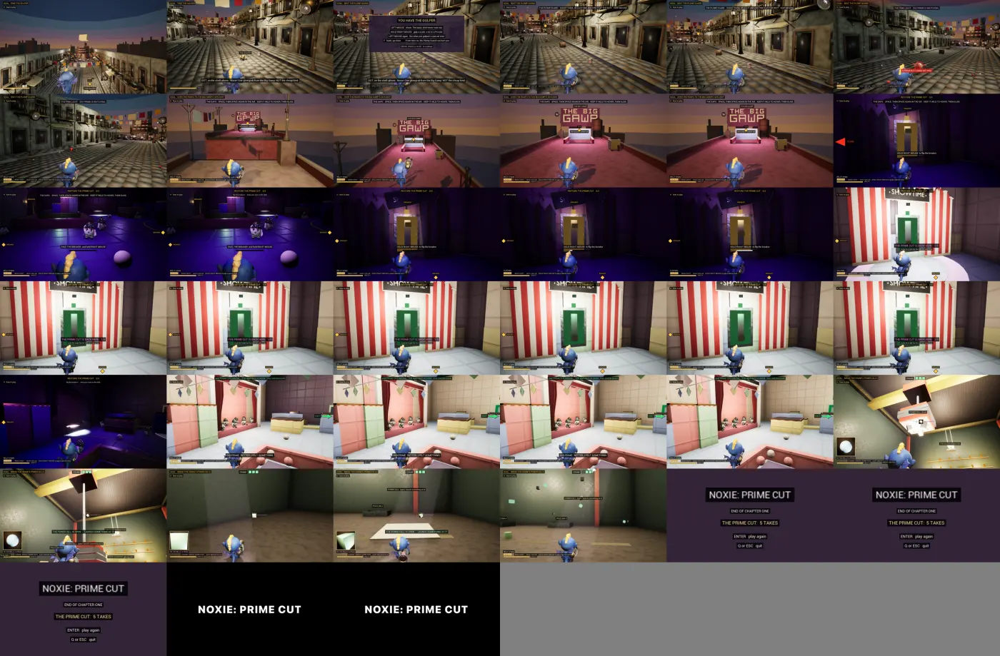
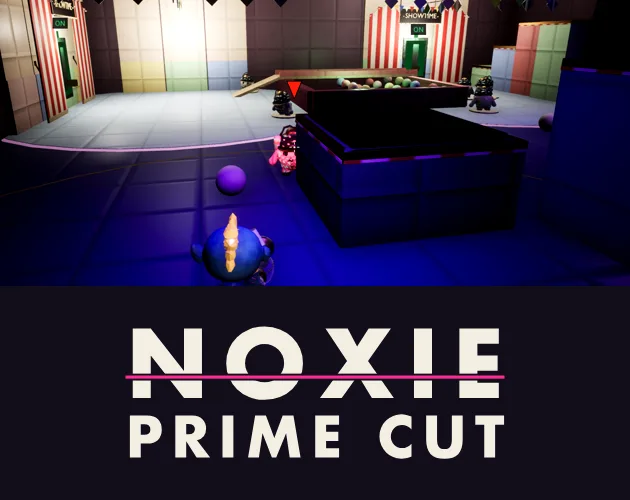
What happened to the trailer before that
- First cut, 08:45: found to have a 3.4 second sound gap near the centre.
- Second cut, 09:07: made the current video. 37.8 seconds, 1920 by 1080, -16.6 LUFS, all ten shots placed by their own clap sound.
- Third cut, 09:12: near-silent for 5.6 seconds. The cause was the capture starving the game's sound loading. Not the build. Not used.
- Fourth cut, 09:26: cause fixed; continuous sound. Called final. Its own record says: "Heard and watched in motion by nobody."
The diagnosis, measured on the file and on the capture
- Repeated frames: 484 of 1,174 (41.2 percent) over the whole file; 334 of 1,008 (33.1 percent) in the gameplay alone. The edit had planned 261 of 1,009 gameplay slots (25.9 percent) to hold a picture.
- Capture rate: 22.28 frames a second (median gap 0.0449 s) laid onto a 30-a-second timeline. The capture itself slowed the game to about 22 frames a second, because each frame waited for its screenshot (street 21.3 fps).
- A second fault, in the assembler: it fed pictures to ffmpeg at 25 a second and a filter re-timed them to 30, which added one more copy in every sixth frame. On a test clip the same plan went from 23 repeats in 132 frames to 5, exactly the 5 slots the plan holds, after the fix.
- Encoding: 3.88 Mbit/s for 1080p. Now constant quality 12, slow preset, and the script refuses any file under 12 Mbit/s.
The new method was tested on short clips, and tried in the open. Half-speed capture gave 5 of 132 (3.8 percent) and 10 of 134 (7.5 percent) repeated frames, both over the 2 percent limit, but both while other runs and the stuck helpers loaded the machine. Frame-stepped capture gave 0 of 137 repeats and a perfect picture at any load, but its sound was not continuous. A 0.4 speed clip gave 1 of 138 (0.7 percent) and its sound sync could not be confirmed. A pitch floor in the engine would also have changed some sounds at half speed; it was lowered for capture. The capture must run on a quiet machine, so it waited until the reviewer's runs were done. As the plan says: no agent can watch it at speed, so the creative lead's eye was the last check on the new trailer, and he rejected it (below).
| Measure | Old trailer (fourth cut) | New trailer (5b) |
|---|---|---|
| Near-duplicate frames, gameplay only | 33.1 percent (334 of 1,008); 41.2 percent over the whole file | 4.1 percent (34 of 829) |
| Video bitrate | 3.88 Mbit/s | about 17.8 Mbit/s |
| Length | 39.1 seconds | 34.4 seconds |
| Capture | 22.28 frames a second onto 30 | half speed, then played at double speed |
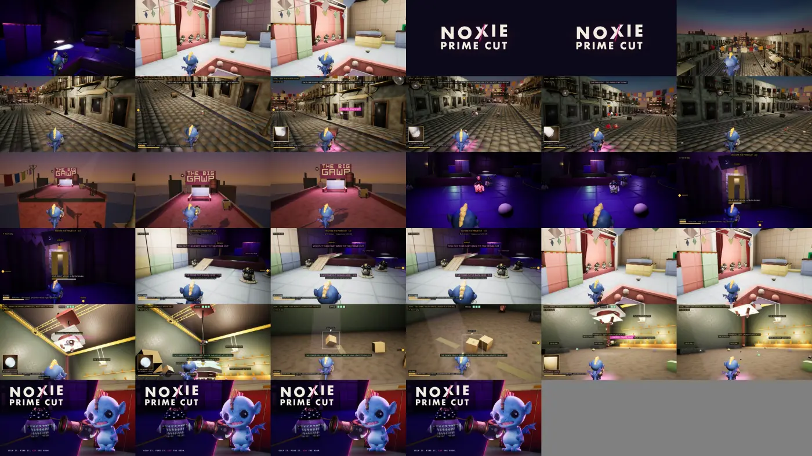
The fourth time something passed every measurement and a person rejected it
The creative lead watched trailer 5b at 16:49 and wrote: "I do not approve it. It feels cheap, starts with confusing footage before establishing the game, and lacks professional editorial direction. The problem is not primarily encoding quality. The problem is storytelling, shot selection, character introduction, pacing, and visual hierarchy."
What the lead agent got wrong. It fixed the measured fault, the smoothness, and never questioned the order of the cut. A trailer can be smooth, sharp and clean and still open on confusing footage before the game is established. Nothing the project measured could say that; only a person watching could.
He then wrote the new sequence himself, for a 25 to 30 second character-first teaser: Noxie first (0 to 3 seconds), then the world, then one coherent Gulper sequence, then the Cut, then an escalation, then the end card. The v5b numbers above stay as the record of the smoothness fix.
A character-first teaser cut to his own sequence (30.7 seconds: a character card, the world, one Gulper sequence, the Cut, an escalation, the end card) is the video he put on the game page.
The marketing: old cover against new
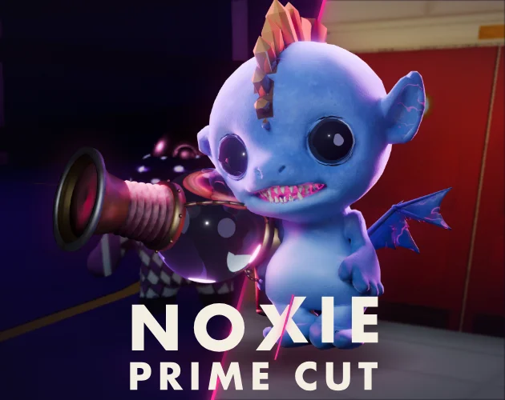
The rule for the screenshots stays the same: they are unaltered game frames. Anything with a render in it is called key art.
Release candidates and the fallback
Evidence: strong for every candidate, including the final Candidate 7b.A playable build was always on disk. Each of the overnight passes ended in a packaged Shipping build. Candidate 4 was frozen with its checksum, made read-only and zipped outside the working folder. Candidate 5 added the look. Candidate 6 added the Prime Cut and Noxie V2 and became the release.
On Sunday morning a scripted player ran from a clean extraction of the Candidate 6 zip (the idle test, a player who presses nothing, 20 of 20; the full chapter run 496 of 496). Its binary checksum, the release zip and the frozen copy were each recorded and re-hashed at 10:47 and matched.
The rule for Candidate 7
Candidate 6 is protected. The Sunday quality pass happened in isolated copies started from a tagged baseline. Candidate 7 replaced Candidate 6 only if every gate passes on the packaged build, each change has a before and after frame from the gameplay camera, an independent reviewer who built none of it finds no regression, and the creative lead or the evidence says it is better. His rule: "If the improvement is marginal, unsafe, incomplete, or unverified, retain Candidate 6."
Sunday, in order
The creative lead played Candidate 6 and listed nine findings (section 14). A fresh lead agent launched ten bounded lines at 11:16 with a 13:00 stop for game changes. Five were engineering lines, each in its own isolated copy. What each changed, and what each could not prove:
- Combat (Opus). The loaded shot, the swallowed box, hit reactions. Could not prove: the floating Private never reproduced, and the airborne-guard rule never fired in three chapter runs.
- Boss (Opus). An entry card, a lit and marked open cell, a highlighted crate, longer warnings, a glowgrub fix, and the dressed crane back on. Needed an independent pass on the package.
- Doors (Opus). The cause was the plain passages seen before the eyelid shut, not drawn trigger boxes: a fast lid at the door line, a dark curtain behind each leaf. One dark frame at the arcade remained, and the prize-hall leaf stayed a plain slab.
- The Cut (Sonnet). The camera hold, faster panels, a stronger pulse. Hall-sweep flash share over the limit; sound and slump untested.
- The look (Sonnet). Rooftop sky stripes gone; soft-play light kept (modest); prize-hall lighting reverted after six tries; the street was not attempted.
A machine fault spoiled results at midday, and a fairness question about the Cut's camera hold was asked and answered (section 13). At 12:54 all engineers stopped. An integrator merged the five lines: two small conflicts (an include list, and a script dispatch), both kept on both sides, nothing dropped. Every gate then passed in the editor: chapter 509 of 509 three times, boss 123 of 123 three times with the dressed crane on, horror 119 of 119, idle 20 of 20, human, careless and seam players 5 of 5 seeds each. The package was built at 13:26 (788 MB).
Frame rate: the integrator's own packaged run read 58.0 to 59.6 fps with 153 slow frames, below the floor, on a busy machine. A Candidate 6 control run straight afterwards, in the same state, read 58.7 to 59.6 with similar counts. The independent run, same conditions for both, read Candidate 7 at 59.5 to 60.0 with 0 slow frames and Candidate 6 at 59.7 to 60.0.
The independent review, by a different model from the builders, reached its verdict at 14:30: keep Candidate 7, no blocker, after 17 packaged runs, a Candidate 6 control, 17 of 17 clean exits and the creative lead's settings unchanged in all 18 runs it touched. It found the two defects described in section 13. Not done by the reviewer: the breaker-flip attack as a run, guards in the air on the package, and a clean 60 fps strip of a door.
The black-screen defect was then fixed in one commit and packaged as Candidate 7b at 15:01. A second, smaller independent check at 15:32 confirmed the diff was exactly that commit and that no doorway went black in 6 more packaged runs. Candidate 7b is the final build.
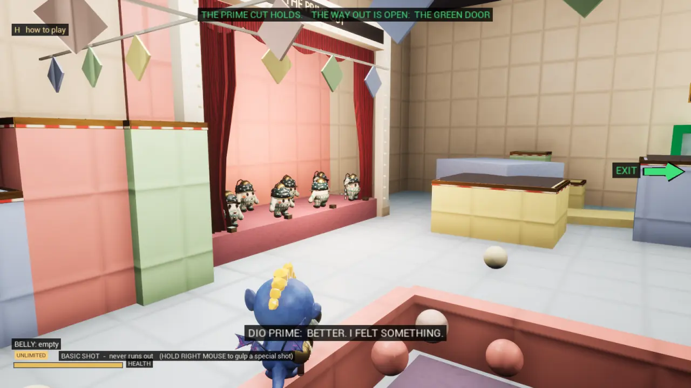
| Planned time (Sunday) | What was planned |
|---|---|
| 13:00 | Hard cutoff: workers stop changing anything. Anything not passing is reverted in its own copy and listed. |
| 13:30 | Lines merged, scene data regenerated, compiled; gates run in the editor game. |
| 14:00 | Candidate 7 packaged. |
| 14:30 | Independent regression on the package. |
| 15:00 | Keep-or-fall-back decision. If there is no validated Candidate 7, Candidate 6 is uploaded. |
| 18:00 / 20:59 | The creative lead's upload target / the jam closes. |
The order of sacrifice if the work backs up: the third and fourth scenes' lighting, then hit reactions, the crane dressing and the Cut's extras. The loaded shot, the doors and the boss explanation are never the ones cut.
The decision. At 14:31 Candidate 7 replaced Candidate 6 as the upload. At 15:32 an independent delta check kept Candidate 7b, which is Candidate 7 plus exactly one commit: the dark curtain behind each door became a one-sided plane. Evidence for 7b: packaged chapter 509 of 509; from the unpacked zip, idle 20 of 20 and chapter 508 of 508; the reviewer's black-screen case 0 black of 103 views (Candidate 7: 19 of 76); 0 black views at all three doorways. One small cost, noted honestly by the reviewer: from the arcade doorway facing the room, a pale strip of plain wall shows at the frame edge where the screen used to be black. The 7b zip is 467,213,845 bytes (30 files); the app is not notarised, as before. Candidate 7's zip was 467,214,026 bytes (unpacked: a scripted idle run 20 of 20 and a full-chapter run 507 of 508 twice). Candidates 6 and 7 stayed byte-identical all day: their binaries and zips were re-hashed before and after every packaging step.
Where everything came from
Evidence: strong. A longer disclosure is submitted separately.One human, no other human contributor. His statement, 15 November: "No other human made anything. Claude used meshy and coded. ChatGPT helped plan and audit Claude."
The Meshy calls, where the records disagreed about who ran them, are resolved by that statement: Claude ran them under his direction.
Content the entrant generates with AI tools is not counted as a sourced asset under the jam's rules; sourced assets must be declared. Both are listed here.
AI-generated
All code and tests. All Blender-scripted models, textures and the dressing kit (no outside models, textures, fonts or services). The score (eight musical states) and 28 of the 59 newest sound effects are synthesised by Python code that the agents wrote, with no samples, loops or presets; the other 31 effects layer licensed human-made recordings (listed below). The first character mesh, skeleton and eight animation clips from Meshy, reworked in Blender into Noxie V2 (wings, skin and glow made by script; skeleton and clips unchanged). Concept pictures by Z-Image Turbo and nano-banana-2 (not in the game).
| Source | Used for | Terms as recorded |
|---|---|---|
| Sonniss GameAudioGDC bundles, 153 recordings from 109 libraries | Layers inside the sound effects, including 31 of the 59 newest files that reuse slices of sounds already layered from them | Royalty-free; commercial use in a game allowed; no credit required; not to be redistributed as a sound pack; not for AI training. The raw and processed recordings are not published. |
| Unreal Engine 5.8 and engine content | Everything | The engine's licence; terms for a commercial release not read for this page. |
| Meshy | Character base model, rig and clips; arcade cabinets; other props | Terms on the creative lead's plan: not confirmed in the records. |
| Z-Image Turbo, nano-banana-2 | Concept pictures only | Not recorded. |
| Blender, Python with numpy, ffmpeg | Modelling, baking, synthesis, decoding, video assembly | Tools run locally; no outside models or textures. |
| Four reference photos of kawaii stickers | Trait references for the first character | Not in the game. Who drew the stickers is not recorded. |
Fab or Marketplace content and non-engine fonts: the project records give no answer either way, and it was not checked for this page. Meshy plan terms: not checked for this page. The Ninja Chicken model is not in the game; whether the Meshy cabinets and claw head are in the submitted build is decided by the build manifest.
The numbers
Evidence: re-derived from the project's records on 15 Nov, between 11:20 and 15:35, with the method named.Commits per day
*Counted at 15:35, with the day not over. The lead and the integrator commit in the main copy; engineers commit in separate copies that count here once merged. The repository's first commit is Friday 13 Nov 12:12.
Tokens: a partial count
As recorded in the running log on Friday at 18:53, a partial count covering only the first 6.75 hours: the lead session used 54.9 million tokens over 150 replies; 15 worker logs used about 488 million (Opus 483.3 million over 1,469 replies; Sonnet 5.1 million). Almost all of it, 476 million of the Opus figure, was re-reading context already cached, not new writing (1.78 million written). A second, separate point: for the Friday-to-Saturday overnight run the harness reported, per worker, Opus 3.73 million tokens over six workers (1,915 tool calls) and Sonnet 0.31 million over two workers. That is a different basis from the Friday figure, which counted cache re-reads, so the two must not be added. The lead session's total was not measured. No whole-project token figure is claimed. No cost in money is attached to these figures in the records.
Counts on this page were taken on Sunday at 14:58 and 15:35 (earlier counts at 11:20: 168 commits on the branch, 177 on all branches). The run-folder and file counts are from 14:58.
What shipped, the limits, the lessons, and next
Evidence: strong. Limits are quoted from the release facts.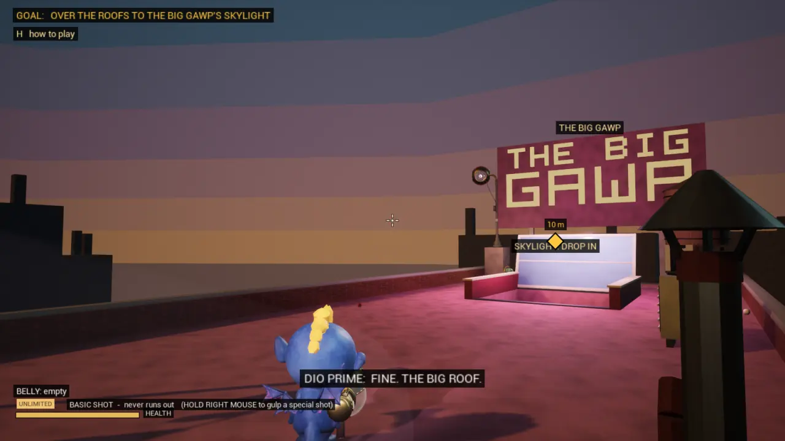
The deliverables
- A Mac Shipping build, one chapter: street, rooftops, arcade, soft-play hall, the breaker room, a prize hall with a crane boss, home. A scripted run takes about five minutes; a person's length is not measured.
- A 39-second gameplay video (the choppy fourth cut, then a smoother 34-second cut that the creative lead rejected at 16:49; then a 30.7-second character-first teaser cut to his own sequence, which is the video he put on the game page) and marketing images, including a new cover.
- Page text, a full AI and asset disclosure, credits, and this dev log.
Known limits, said plainly
- The boss is built from plain boxes; the home porch is plain; the sky shows colour steps; a few effects are flat discs.
- A careless player can leave the breaker room on a second take without dying, and the careless scripted player is exempt from the new camera hold by name.
- The third power cell can need several launches from far away; crates reliably hit it from within about 3 m. The prize hall lighting and the street are unchanged, the floating Private was never reproduced, and the doors are still flat slabs.
- The output is quiet; Dio Prime's lines are text only.
- Apple silicon Mac only. Intel Macs and a controller are not verified. The app is not notarised: first open needs right-click then Open. No Windows build: the entry is macOS only. The jam page lists macOS, but the Official Rules and an Epic staff reply on the jam forum say to package for Windows. The creative lead knew this risk and decided to submit the macOS build because no Windows machine was available, and he did submit it (about 5:38 PM EST on Sunday, shown on the jam's public entry page as 3 hours, 21 minutes before the deadline).
- Only the creative lead is recorded as having played Candidate 6. Nobody had played Candidate 7 or 7b by hand when this page was last updated, and there was no wider playtest.
- Nothing here says the game is fun. That is for a player to say.
Lessons
- Passing tests missed two defects that an independent reviewer on a different model found within an hour. The third power cell and the black screen behind a door curtain (section 13). Tests prove function, not feel: three times green tests and a human playing disagreed, and the human was right.
- Measure a video's smoothness before calling it done. The old trailer passed format, loudness and silence checks and was 41 percent repeated frames.
- A wait with no timer is a stall. The lead agent lost two and a half hours to one.
- A check has to fail first. Control cases before trust.
- Different model, different blind spots. Reviewers that did not build the work found what builders had accepted.
- Log your own mistakes. The wrong guesses stayed in the record with the correction underneath.
- A cut can pass every measurement and still be wrong in order. The lead agent fixed the trailer's smoothness and never questioned its sequence; the creative lead rejected it at 16:49.
- A fix its own author doubts does not ship. The aim fix for the third power cell was better but not reliable, so it stayed out of the build and went on the after-jam list.
- Keep a fallback and protect it. A playable build existed at every point.
Roadmap after the jam
Nothing below is scheduled or approved.
- Ninja Chicken, a living weapon that fires an egg that hatches an ally: planned as an optional pass, deferred, never built. A Meshy model exists; there is no code.
- The aim fix for the third power cell, kept out of Sunday's build; the cause of the dressed-crane walk-home failure in one test; the Gulper's two names for one loaded shot.
- More chapters and places; each scene already has takes that Dio Prime re-cuts.
- Real models for the boss, porch, cabinets and sky; Noxie's magenta mouth and wings that deform.
- Deeper combat, traversal and enemies; a controller pass.
A gallery of what was actually made
Every image on this page, and a few more, with what each one is. Select one to enlarge.